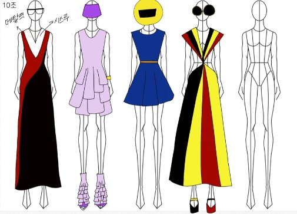

Color Science
색채학
색의 기본 성질부터 색 체계, 퍼스널 컬러, 트렌드 컬러 기획까지.

색은 물체를 볼 때 가장 먼저 느끼는 요소입니다. 색의 기본 성질과 색 체계, 배색 원리, 퍼스널 컬러, 트렌드 컬러 기획을 배우고, 여러 실습으로 색을 이해하고 쓰는 감각을 길렀습니다. 실습물로 Dolce&Gabbana 2022 포스터를 만들었습니다.
렌더링에서 색이 어떻게 보이는지 판단할 때 지금도 쓰는 감각입니다.
Color Science
색의 기본 성질부터 색 체계, 퍼스널 컬러, 트렌드 컬러 기획까지.

색은 물체를 볼 때 가장 먼저 느끼는 요소입니다. 색의 기본 성질과 색 체계, 배색 원리, 퍼스널 컬러, 트렌드 컬러 기획을 배우고, 여러 실습으로 색을 이해하고 쓰는 감각을 길렀습니다. 실습물로 Dolce&Gabbana 2022 포스터를 만들었습니다.
렌더링에서 색이 어떻게 보이는지 판단할 때 지금도 쓰는 감각입니다.